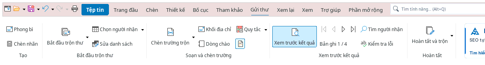
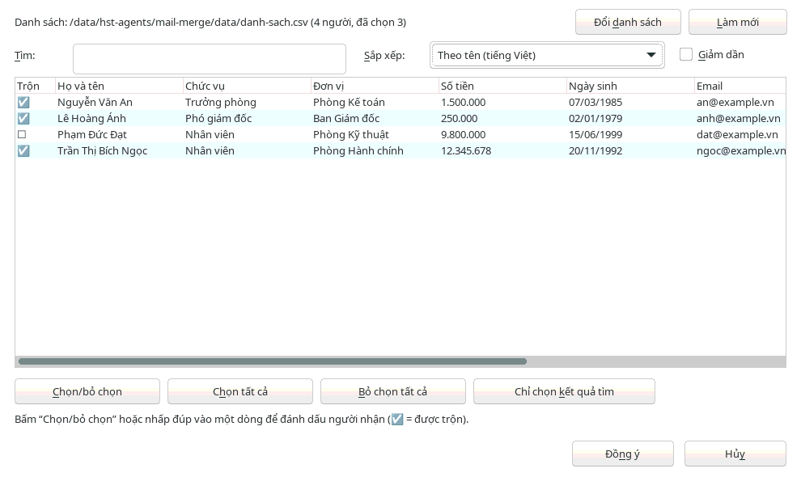
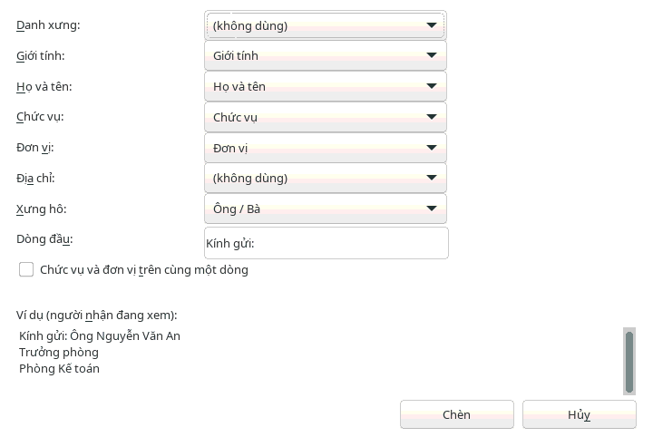
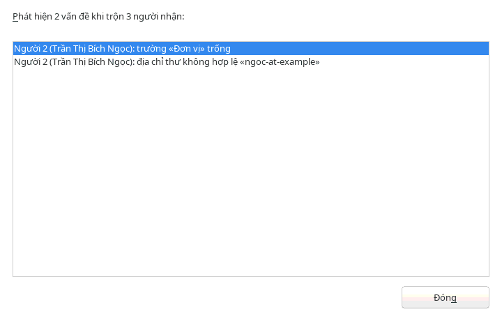
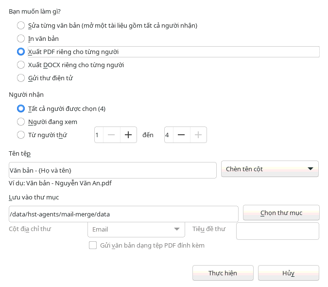

Văn bản
Văn bản: trộn thư
Trộn thư tạo nhiều văn bản giống nhau cho nhiều người từ một mẫu và một danh sách: giấy mời, phiếu lương, giấy chứng nhận, thông báo. Mọi lệnh nằm trên thẻ , theo thứ tự từ trái sang phải; nút có dấu ▾ mở danh sách lựa chọn.

1. Bắt đầu trộn thư
chọn loại văn bản: , , , (khi hoàn tất sẽ đề xuất gửi thư điện tử) hoặc để bỏ liên kết văn bản với danh sách. Mục cuối mở trình hướng dẫn nhiều bước cho người đã quen.
2. Danh sách người nhận
Bấm và chọn một cách:
- : tệp bảng tính hoặc CSV. Dòng đầu tiên là tiêu đề cột, viết tiếng Việt có dấu tùy ý, ví dụ Danh xưng, Họ và tên, Chức vụ, Đơn vị, Địa chỉ, Giới tính, Email. Tệp CSV dạng UTF-8 hay dạng CSV mặc định của Windows đều đọc được. Nếu tệp có nhiều trang tính, chọn trang chứa danh sách.
- : gõ danh sách ngay trong HST Writer. Đổi tên các cột trong ô (cách nhau bằng dấu chấm phẩy), chọn một người trong bảng rồi nhập thông tin vào các ô bên dưới; và để thêm, bớt. Bấm và chọn nơi lưu tệp
.xlsxhoặc.ods. - : dùng danh bạ hoặc bảng dữ liệu đã thêm vào HST Office ().
Số điện thoại, số CCCD, mã số có số 0 ở đầu được giữ nguyên. Không cần đăng ký “cơ sở dữ liệu”: HST Office tự kết nối danh sách với văn bản và nhớ lựa chọn trong văn bản.
mở bảng người nhận. Cột có dấu ☑ ở người sẽ được trộn: bấm hoặc nhấp đúp vào một dòng để bỏ một người. Ô không cần gõ dấu (gõ “ngoc” tìm được “Ngọc”); theo cột hoặc . đọc lại tệp vừa sửa.

3. Soạn và chèn trường
Đặt con trỏ vào chỗ cần điền rồi:
- : bấm nửa trên để mở hộp thoại (chọn cột, cách hiển thị và xem ví dụ), hoặc bấm ▾ để chèn ngay một cột. Mục cuối của danh sách ▾ là .
- : chèn khối theo thứ tự Việt Nam, bỏ qua dòng trống, không cần mã bưu điện hay quốc gia:
Kính gửi: Ông Nguyễn Văn An Trưởng phòng Phòng Kế toán 12 Lê Lợi, Huế
Danh xưng lấy từ cột Danh xưng; nếu không có thì theo cột Giới tính (Nam → Ông, Nữ → Bà, hoặc Anh/Chị), không rõ thì “Ông/Bà” (ông trước, bà sau). Các cột được tự nhận theo tên tiêu đề và có thể chọn lại. - : ví dụ “Kính gửi ông An,” (gọi theo tên) hoặc “Thân gửi chị Nguyễn Thị Hà”; khi không rõ giới tính: “Kính gửi ông/bà An,”. Chọn lời chào, cách xưng hô, gọi tên hay cả họ tên, viết hoa danh xưng và dấu kết thúc.
- :
- : chèn chữ khác nhau theo điều kiện, ví dụ nếu Giới tính bằng “Nam” thì “Kính mời anh {Họ và tên}”, khác thì “Kính mời chị {Họ và tên}”.
- : không trộn người thỏa điều kiện, ví dụ Email trống. Hộp thoại cho biết quy tắc bỏ qua bao nhiêu người.
- : một câu hỏi được hỏi một lần khi hoàn tất (ví dụ ngày họp); câu trả lời điền vào mọi bản.
- : số 1, 2, 3… theo thứ tự trộn, có thể bắt đầu từ số khác.

Số và ngày được viết theo cách của Việt Nam: 1.500.000, 1.234.567,50, 07/03/1985, ngày 07 tháng 03 năm 1985; số tiền có thể đọc thành chữ (“Một triệu năm trăm nghìn đồng chẵn”) theo thiết lập của Đọc số thành chữ.
4. Xem trước kết quả và kiểm tra lỗi
Bấm để thay các trường bằng dữ liệu thật. Các mũi tên chuyển người nhận; dòng cho biết đang xem người thứ mấy. nhảy tới người cần tìm. Bấm lại để hiện tên trường.
thử trộn toàn bộ và liệt kê các vấn đề: trường không có trong danh sách, trường trống ở người nào, địa chỉ thư điện tử sai (khi loại văn bản là thư điện tử), trùng tên tệp, văn bản chưa có trường trộn.

5. Hoàn tất và trộn
Bấm rồi chọn một việc:
- : mở một tài liệu mới gồm văn bản của tất cả người nhận để sửa riêng từng người trước khi in hoặc lưu.
- : tạo tài liệu như trên rồi mở hộp thoại .
- : mỗi người một thư tới địa chỉ trong cột thư điện tử, có thể gửi văn bản dạng PDF đính kèm. Cần thiết lập máy chủ gửi thư trước trong .
- hoặc : mỗi người một tệp trong . ghép từ chữ và tên cột trong dấu ngoặc nhọn, ví dụ
Giấy mời - {Họ và tên} - {Đơn vị}; chọn để thêm cột. Tệp trùng tên đã có trong thư mục được giữ nguyên, tệp mới có thêm số ở cuối tên.
Trong hộp thoại, cho phép trộn tất cả người được chọn, chỉ người đang xem, hoặc một đoạn từ người thứ … đến người thứ …. Nếu văn bản có quy tắc , câu hỏi hiện ra trước khi trộn.

.odt. Khi lưu dạng .docx, cách hiển thị số và ngày của trường được HST Office nhớ theo từng cột và tự áp dụng lại khi mở tệp; phần mềm khác có thể hiện số chưa định dạng.